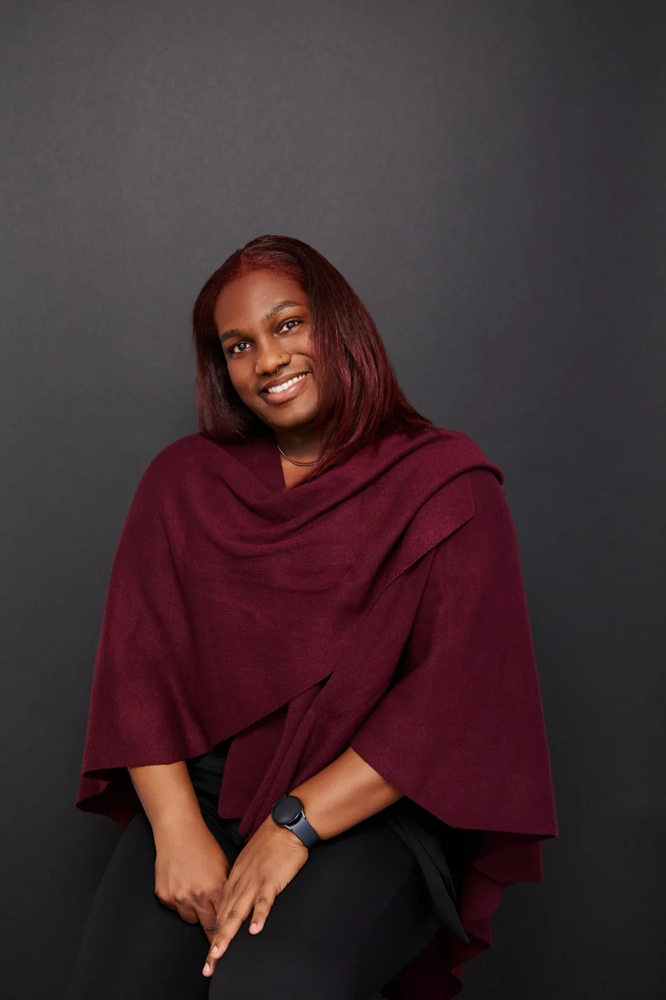

University-wide leadership inquiry
Grounded theory research examining leadership, change, retention, graduation, and belonging across higher education.
SCHOLARSHIP · PRAXIS · BECOMING
Breneil Malcolm PhD · they/them
Intersectional learning scientist. Multi-method researcher. Advocate. Health, fitness, and wellness professional.

A PRACTICE OF INTERSECTIONS
I am an intersectional learning scientist, multi-method researcher, advocate, and health, fitness, and wellness professional. As an intersectional learning scientist, I center intersectionality in how I theorize and operationalize the study of learning as socioculturally and sociopolitically situated.
My approach is holistic, embracing the multiplicity of lived experiences and centering the presence of the self within my scholarly discourse and praxis. Across these interconnected dimensions of my work, I understand learning, knowledge production, and embodied experience as inseparable from the identities, relationships, and systems of power through which they emerge.
THE QUESTIONS I PURSUE
My scholarship explores learning as embodied, intersectional, and situated within historical and contemporary sociopolitical relations. Across theoretical, methodological, and empirical inquiry, I examine the dialectical relationship between violence and death, and resistance and advocacy.
Explore research conversations ↗Trans* embodiment · Identity learning · Intersectionality · Decolonial inquiry
KNOWLEDGE IN CONVERSATION
PEER-REVIEWED JOURNAL ARTICLE
Malcolm, B. · International Journal of Qualitative Studies in Education
PEER-REVIEWED JOURNAL ARTICLE
Herry, A., Greer, D., Malcolm, B., & Sagner, E. · SAGE Open
PEER-REVIEWED CONFERENCE PROCEEDING · SYMPOSIUM
Collaborative scholarly output bringing together 18 authors
Explore the full bibliography on the Scholarship page.
LEADING CHANGE THROUGH PRACTICE
My professional work connects student success, educational equity, research, advocacy, and program and project management. Across institutions and communities, I work to translate critical inquiry into responsive initiatives, collaborative processes, and meaningful organizational change.
Grounded theory research examining leadership, change, retention, graduation, and belonging across higher education.
Longitudinal analysis and cross-unit collaboration supporting evidence-informed equity assessment.
Multidisciplinary program coordination, learner support, and educational development across institutional contexts.
05 / LEADERSHIP & SERVICE
Through scholarly publishing, nonprofit governance, disciplinary equity initiatives, and intergenerational mentorship, I work to expand participation and advance communities of learning and practice.
EDITORIAL STEWARDSHIP · GOVERNANCE · ADVOCACY
06 / HEALTH, FITNESS & WELLNESS
My relationship with health, fitness, and wellness is inseparable from my ongoing process of becoming. My biopsychosocial philosophy centers empowerment, advocacy, and the multiplicity of embodied experiences.
7 YEARS OF COACHING · NASM · AFAA · ISSA
CONTINUE THE CONVERSATION
I welcome opportunities for scholarly exchange, collaboration, advocacy, and conversations across disciplines and communities.
Get in touch ↗Explore my academic and professional experience in greater detail.